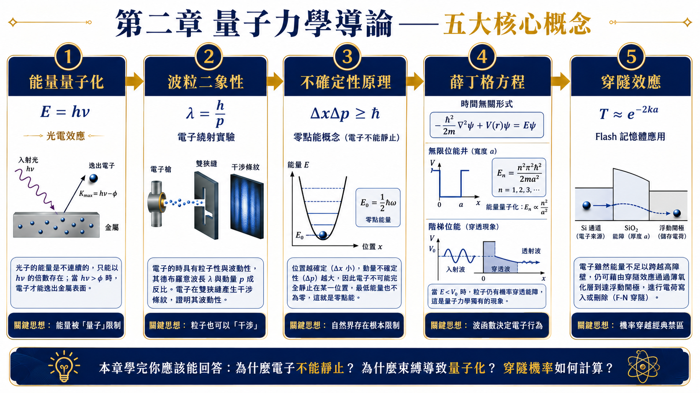
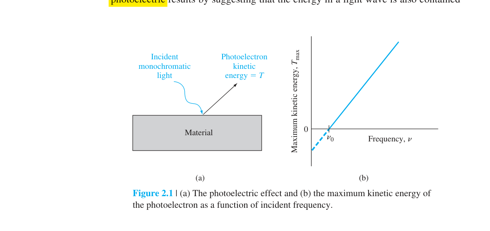
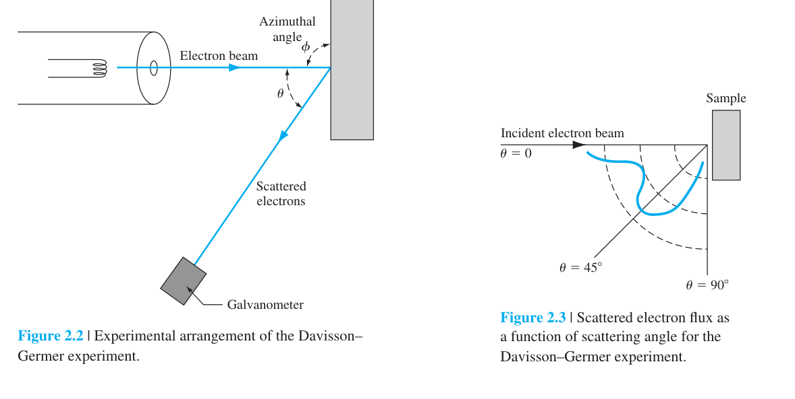
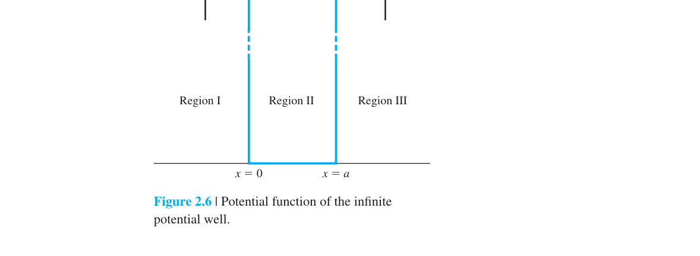
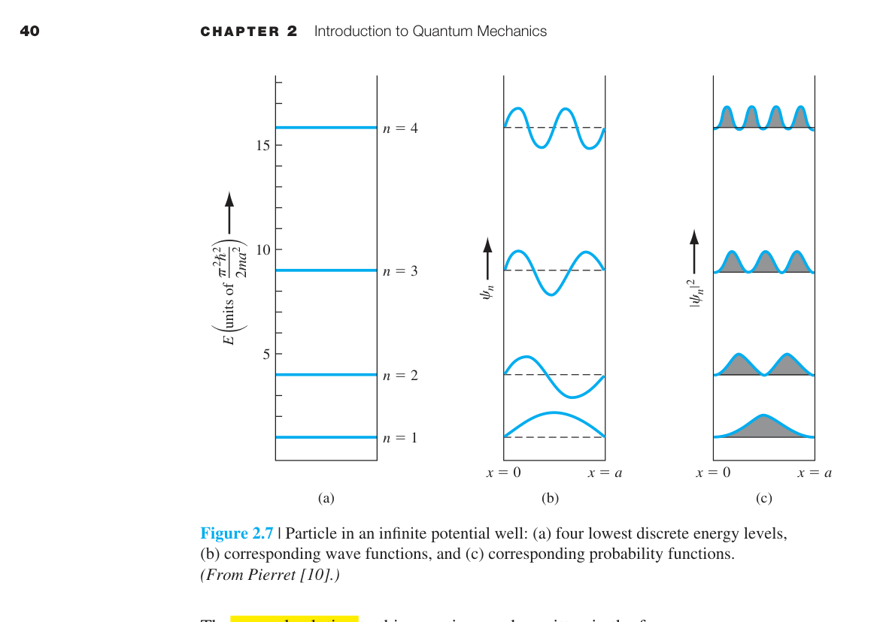
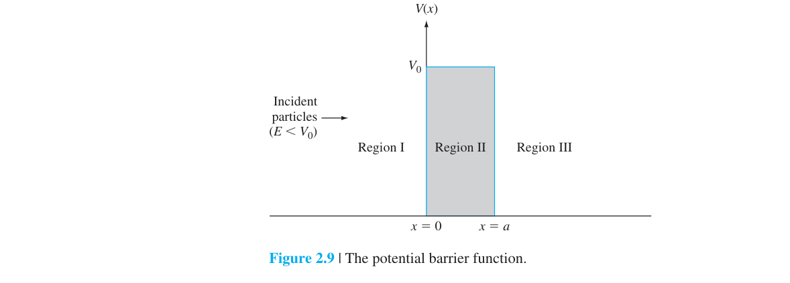
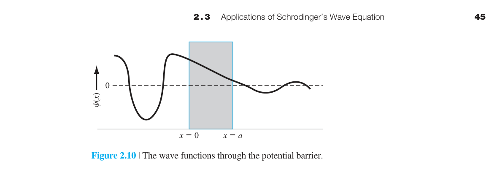
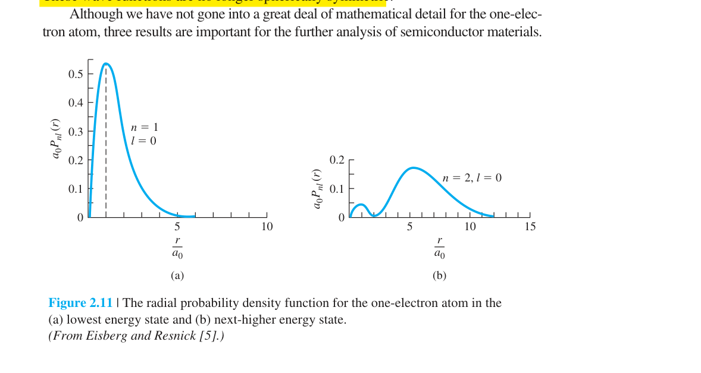

量子力學導論
2.0 本章預覽
古典物理學（牛頓力學、馬克士威電磁學）在描述日常尺度的物體時極其成功。但在原子尺度——電子的行為完全不符合古典預測。電子不是微小的撞球；它們是機率波，同時具有粒子和波的性質，能量是量子化的。
本章邏輯鏈：古典物理的失敗（光電效應）→普朗克/愛因斯坦（能量量子）→德布羅意（物質波）→海森堡（不確定性）→薛丁格（波動方程）→求解各種位能下的電子行為→延伸到原子（量子數、週期表）。
關鍵概念
- 能量量子化：$E=h\nu$ 解釋光電效應與原子離散能階。
- 波粒二象性：$\lambda=h/p$；物質波是薛丁格方程的基礎。
- 不確定性：$\Delta x\Delta p\ge\hbar/2$ 限制同時精確測量。
- 薛丁格方程：$|\psi|^2$ 為機率密度；邊界條件決定允許能態。
- 位能阱與穿隧：量子化能級與 $T\propto e^{-2\kappa a}$ 是侷限與穿隧元件基礎。
🧭 本章推理地圖
- 已知條件原子尺度下古典力學失效，需以波函數描述電子態（§2.1）
- 中間機制薛丁格方程在各種位能下給出離散能級與穿透機率（§2.2–§2.3）
- 固體前奏原子量子數與 Pauli 原理為多電子與能帶理論鋪路（§2.4）
- 工程用途理解量子侷限、穿隧與能隙起源，連結至第三章能帶（Ch3）

2.1.1 能量量子化——光電效應
古典物理預測：只要光夠強，任何頻率都能打出電子。實驗事實：低於某個截止頻率 $\nu_0$，再強的光也打不出電子。高於 $\nu_0$，即使極微弱的光也能打出電子。古典物理完全無法解釋。
普朗克（1900）提出了一個革命性的假設：熱輻射的能量不是連續的，而是以離散的能量包（量子）形式發射。每個量子的能量為 $E = h\nu$，其中 $h = 6.625\times10^{-34}$ J·s——這就是普朗克常數，量子力學的標誌性常數。
愛因斯坦（1905）更進一步：光本身也是由離散的能量包組成的——光子（photon）。光電效應的完整解釋：
物理圖像：一個光子擊中金屬表面。如果光子能量 $h\nu$ 大於金屬的功函數 $\phi$（把電子從表面拉出來所需的最小能量），多餘的能量變成光電子的動能。光子能量不夠（$\nu < \nu_0$）→電子出不來。光強度只改變光子的數量（每秒多少個光子），不改變每個光子的能量→光強度影響光電子發射率，不影響最大動能。

能量量子化的關鍵是：光與物質交換能量時，不是連續任意小份，而是以 $h\nu$ 為單位。
例題：截止頻率的判讀
若入射光頻率低於截止頻率，即使光強再高也不會逸出電子；若頻率高於截止頻率，增加光強才會增加逸出電子數。
2.1.2 波粒二象性
光（傳統認為是波）表現出粒子性→那粒子是否也表現出波動性？德布羅意（1924）大膽假設：是。任何運動的粒子都有一個對應的波長：
這不只是理論臆測。Davisson 和 Germer（1927）用電子束照射鎳單晶，觀測到電子散射的繞射圖案——就像光通過光柵產生的干涉條紋。電子真的表現得像波。
數值直覺：一個被 150 V 電壓加速的電子，動能 $E = eV = 150$ eV→$v = 7.3\times10^6$ m/s→$\lambda = h/(mv) = 6.63\times10^{-34}/(9.11\times10^{-31}\times7.3\times10^6) = 1.0$ Å。這正好是原子間距的量級→電子束可以在晶體上產生 Bragg 繞射。相比之下，一個 1 kg 的棒球以 30 m/s 運動：$\lambda = 6.63\times10^{-34}/(1\times30) = 2.2\times10^{-35}$ m——比普朗克長度還小，完全無法觀測到波動性。

粒子動量越大，對應波長越短；因此高能電子可用於解析原子尺度結構。
在巨觀物體中 de Broglie 波長極小，波動性不易觀察；在電子與奈米元件中則不可忽略。
例題：為何電子顯微鏡解析度高？
加速電子的動量大、de Broglie 波長短，可小於可見光波長許多，因此能解析更小的結構。
2.1.3 海森堡不確定性原理
在古典物理中，你可以同時精確知道粒子的位置和動量。量子力學說：不行。
其中 $\hbar = h/2\pi = 1.054\times10^{-34}$ J·s。這不是測量儀器的限制——這是自然的本質限制。電子本質上不具有同時確定的位置和動量。
數值估算——侷限必然帶來動量展寬：若電子的位置不確定度為 $\Delta x\approx1$ nm，則 $\Delta p\geq\hbar/(2\Delta x)\approx5.27\times10^{-26}$ kg·m/s，對應的最低動能量級約 $0.01$ eV。這只是由不確定關係得到的量級下限；若是寬度恰為 1 nm 的無限深位能井，自由電子的精確基態能量為 $E_1=\pi^2\hbar^2/(2ma^2)\approx0.376$ eV。兩者都顯示侷限尺度越小，動能尺度越高（$E\propto1/a^2$）。
不確定性原理說明微觀粒子不能同時具有精確位置與精確動量，這不是儀器粗糙造成的。
當元件尺寸縮小，位置侷限變強，動量與能量分布也會變寬，量子效應因此進入元件設計。
例題：井寬變小為何能量升高？
若電子被限制在更小區域，位置不確定度下降，動量不確定度上升；對束縛態而言，這會反映成較高的最低能量。
2.2 薛丁格波動方程式
薛丁格方程式把波粒二象性與能量量子化整理成可計算框架：給定位能 $V(x)$ 與邊界條件，求波函數與允許能量。
時間無關方程 $\frac{d^2\psi}{dx^2}+\frac{2m}{\hbar^2}[E-V]\psi=0$ 是本章核心；自由電子、位能井與穿隧皆由此出發。
分離變數 $\Psi=\psi(x)\phi(t)$ 把時間與空間分開；位能不隨時間改變時，能量本徵值由空間方程決定。
波函數 $\psi$ 為複數，不可直接量測；可量測的是 $|\psi|^2$ 與由它導出的期望值。
半導體中的電子態、能帶與接面位能，最後都可追溯到不同 $V(x)$ 下的薛丁格解。
📝 自編概念例 — 自由空間
$V(x)=0$ 時解為平面波；加位能井或障壁後改為駐波或指數衰減。
2.2.1 波動方程式
如果粒子是波，那支配它們的「運動方程」是什麼？薛丁格（1926）給出了答案：
這看起來像擴散方程和波動方程的混合體。左邊第一項是動能項（$\partial^2/\partial x^2$ 來自動量平方，除以 $2m$ 就是動能）；第二項是位能。右邊是時間變化。虛數 $j$ 的出現意味著 $\Psi$ 是複數函數——它本身不是可測量的物理量。
透過分離變數法 $\Psi(x,t)=\psi(x)\phi(t)$，可將時間和空間部分分開。關鍵結果是時間無關的薛丁格方程式：
這是本章的核心——所有後續的應用（自由電子、無限位能井、穿隧）都是對不同 $V(x)$ 求解 (2.13)。
方程式的輸入是位能函數 $V(x)$ 與總能量 $E$，輸出是可用來計算機率的波函數 $\psi(x)$。
例題：自由空間的位能怎麼設？
自由電子可令 $V(x)=0$，方程式會得到平面波形式；若加入位能井或障壁，解會改成駐波或指數衰減。
2.2.2 波函數的物理意義
$\psi(x)$ 本身是複數函數，沒有直接的物理意義。你不能用任何儀器「測量」$\psi$。那它有什麼用？
Born 的機率詮釋（1926）：$|\psi(x)|^2 dx$ = 在 $x$ 和 $x+dx$ 之間找到粒子的機率。$|\psi|^2 = \psi^*\psi$ 是機率密度——一個實數、非負的函數。
這就是歸一化條件——粒子一定在宇宙中的某個地方。所有合法的波函數都必須滿足這個條件。
歸一化條件確保粒子出現在全部空間中的總機率為一，是波函數可被解讀為機率振幅的前提。
若波函數乘上一個常數，物理機率也會改變，因此必須用歸一化固定尺度。
例題：為什麼要積分 $|\psi|^2$？
$|\psi(x)|^2$ 是單位長度機率密度，乘上 $dx$ 才是小區間內的機率；對全空間積分後應等於 1。
2.2.3 邊界條件
薛丁格方程是二階微分方程，需要邊界條件來確定唯一解。物理上，邊界條件來自對波函數合理性的要求：
條件一：$\psi$ 必須連續。如果 $\psi$ 在某點不連續，$\partial\psi/\partial x$ 在該點會變成狄拉克 delta 函數→$\partial^2\psi/\partial x^2$ 發散→薛丁格方程無解。物理上：機率密度不能瞬間跳變。
條件二：$\partial\psi/\partial x$ 必須連續（除非 $V(x)$ 在該點發散到無窮大）。理由同上——如果一階導數不連續，二階導數就發散。唯一例外是 $V=\infty$ 的邊界（如無限位能井的壁），此時 $\psi$ 本身在邊界處為零。
條件三：$\psi$ 必須有界，且束縛態必須可歸一化。束縛態在無窮遠處趨近於零；散射態的平面波不會趨零，通常採盒歸一化或 delta 歸一化處理，不能把束縛態條件直接套到所有量子態。
條件四：$\psi$ 必須是單值函數。在任何位置 $x$，$|\psi(x)|^2$ 只能有一個值——否則機率密度就不唯一。
例題：無限位能牆的邊界條件
若井外位能無限大，電子不可能出現在井外，因此牆壁處波函數必須為零，這會限制井內只允許特定駐波。
2.3.1 自由空間中的電子
最簡單的情況：$V=0$（沒有力作用在電子上）。解 (2.13) 得：
這是一個行進波——$Ae^{jkx}$ 向右傳播，$Be^{-jkx}$ 向左傳播。物理圖像：自由電子像一個在空間中均勻分布的波。$|\psi|^2 = |A|^2$ 是常數——電子在任何位置被找到的機率完全相同。這與不確定性原理一致：動量完全確定（$p=\hbar k$，單一波數）→位置完全不定。
波數 $k$ 是量子力學中最重要的參數之一，它串聯了多個物理量：
自由電子沒有空間侷限，因此能量不必離散化，波函數可用行進波描述。
單一波數代表動量確定，但位置機率分布延展到整個空間。
例題：由波數求動量
若自由電子波函數含 $e^{jkx}$，其動量為 $p=\hbar k$；波數越大，動量與能量越高。
2.3.2 無限位能井 ⭐
把電子關在一個寬度為 $a$ 的「盒子」裡——$V=0$（$0<x<a$），$V=\infty$（外面）。電子完全無法逃脫。

物理圖像：想像一條兩端固定的琴弦。弦只能以特定頻率（諧波）振動——你不能讓弦以任意頻率振動。電子的波函數也是如此：兩端必須為零（$\psi(0)=\psi(a)=0$），就像琴弦的兩端固定。這導致波函數只能是駐波——不是行進波。
數學推導：$\psi(0)=0$→$A_1=0$（只剩正弦項）。$\psi(a)=0$→$\sin(ka)=0$→$ka=n\pi$。這是量子化的來源——$k$ 只能取離散值 $k_n = n\pi/a$。代入 $k=\sqrt{2mE}/\hbar$：

① 駐波而非行進波：束縛粒子的標誌。自由電子→行進波；束縛電子→駐波。
② 零點能 $E_1 \neq 0$：即使 $T=0$ K，電子也不能靜止。若動量被精確固定為零（$\Delta p=0$），位置不確定度便不能有限；它無法同時滿足位能井的空間侷限與邊界條件。基態因此具有非零能量。
③ $E_n \propto n^2/a^2$：能階間距隨 $n$ 增大而增大（非等距！）。$a$ 越小（井越窄），能階越高。這是量子侷限效應——把電子關在更小的空間裡需要更多能量。
無限井是最清楚的量子化範例：空間邊界把連續波數限制成離散模式。
井寬越小，允許波長越短，對應能量越高，這就是量子侷限的基本尺度律。
基態能量不為零，表示電子不能在有限空間內同時具有零動量與確定位置範圍。
例題：井寬加倍能階怎麼變？
因為 $E_n\propto1/a^2$，若井寬加倍，同一 $n$ 的能量會降為原來的四分之一。
2.3.3 階梯位能——滲入古典禁區
現在考慮一個更有趣的場景：位能在 $x=0$ 處從 0 跳到 $V_0$。電子從左邊來，能量 $E < V_0$（古典物理中電子不可能越過障壁）。
區域 I 的解仍是行進波（入射+反射）。區域 II 呢？
穿透深度的數值估算：$1/k_2$ 是波函數衰減到 $1/e$ 的特徵長度。對 Si 中的電子（$m^* = 0.26\,m_0$）越過一個 1 eV 的障壁，且 $E = 0.5$ eV（$V_0-E = 0.5$ eV）：
穿透深度只有 ∼0.5 nm（約 2 個原子層）！這就是為什麼穿隧效應只在極薄的障壁（< 3 nm）中才顯著。
反射係數與滲入：對延伸到 $x\to+\infty$ 的半無限階梯且 $E<V_0$，障壁內只有消逝波，沒有向右傳遞的機率流，因此總反射率是 $R=1$。但 $\psi_2(x)$ 在界面附近仍不為零，表示量子機率密度會滲入古典禁區；「有滲入」不等於「有淨透射流」。有限寬障壁才會在另一側形成非零透射流。
例題：穿透深度如何變化？
若 $V_0-E$ 變大，$k_2$ 增大，穿透深度 $1/k_2$ 變小；也就是障壁越高，波函數衰減越快。
2.3.4 位能障壁與穿隧效應 ⭐
如果障壁的寬度是有限的（寬度 $a$），電子可以從左邊「穿隧」到右邊：

物理直覺：穿隧機率隨障壁寬度 $a$ 指數衰減（不是線性！）。$a$ 每增加一個 $1/k_2$（約 1–2 Å），穿隧機率就減少 $e^2 \approx 7.4$ 倍。這就是為什麼穿隧效應只對極薄的障壁（奈米尺度）重要。
數值例題：取 SiO₂ 障壁 $V_0=3.1$ eV、電子能量 $E=1.0$ eV、$m^*\approx0.5m_0$，則 $k_2=\sqrt{2m^*(V_0-E)}/\hbar\approx5.25\times10^9$ m$^{-1}$。只看主導的指數因子：$a=3$ nm 時 $e^{-2k_2a}\approx2.1\times10^{-14}$；$a=1$ nm 時約 $2.8\times10^{-5}$；$a=0.5$ nm 時約 $5.3\times10^{-3}$。這裡刻意選 $0<E<V_0$，因為前式的前因子在 $E=0$ 時為零，不能一面代入 $E=0$、一面只保留指數項宣稱是完整穿隧率。
• 快閃記憶體（Flash）：程式寫入／抹除可利用高電場下的 Fowler–Nordheim 穿隧，較薄介電層也可能出現直接穿隧。實際厚度取決於材料、電場、可靠度與製程世代，沒有通用的「必須小於 8 nm」門檻。
• 穿隧二極體（Tunnel Diode）：重摻雜的 pn 接面，空乏層極薄→電子可直接穿隧。
• STM（掃描穿隧顯微鏡）：探針尖端與樣品表面之間有真空障壁→穿隧電流對距離極其敏感（指數關係）→可解析單個原子。
有限障壁與半無限階梯不同，波函數可在另一側重新形成行進波，因此有非零透射率。
穿隧機率對障壁厚度呈指數敏感，所以奈米尺度厚度差異會造成巨大電流差異。
例題：障壁變薄為何漏電暴增？
因為 $T$ 含有 $e^{-2k_2a}$，厚度 $a$ 每減少一點，指數項就可能增加好幾個數量級。
2.4 波理論在原子中的延伸
原子物理把一維量子模型推廣到三維：主量子數 $n$、角動量 $l$、磁量子數 $m$ 與自旋 $s$ 標記允許狀態。
氫原子 $E_n=-13.6/n^2$ eV；Pauli 原理每態最多一電子，決定週期表與電子組態。
矽 $1s^2 2s^2 2p^6 3s^2 3p^2$ 有 4 個價電子，經 $sp^3$ 混成形成四面體共價鍵→鑽石結構。
孤立原子能階在形成晶體時分裂成能帶，是第 2 章與第 3 章之間的關鍵橋樑。
軌域形狀（$s$ 球對稱、$p$ 有方向性）影響鍵結方向與能帶結構。
📐 例題 — $n=2$ 殼層
每殼層最多 $2n^2$ 電子；$n=2$ 可容納 8 個電子。
2.4.1 單電子原子
將薛丁格方程應用於氫原子——一個電子和一個質子之間的庫侖吸引力：$V(r) = -e^2/(4\pi\epsilon_0 r)$。因為位能是球對稱的，在球座標中求解。
求解過程產生三個量子數（加上自旋就是四個）：
| 量子數 | 符號 | 取值 | 物理意義 |
|---|---|---|---|
| 主量子數 | $n$ | $1,2,3,\ldots$ | 決定能量 $E_n = -13.6/n^2$ eV |
| 角動量量子數 | $l$ | $0,\ldots,n-1$ | 決定軌域形狀（s,p,d,f） |
| 磁量子數 | $m$ | $-l,\ldots,+l$ | 決定軌域空間取向 |
| 自旋量子數 | $s$ | $\pm 1/2$ | 電子內稟角動量 |

包立不相容原理——每個量子態 $(n,l,m,s)$ 只能被一個電子佔據——決定了原子中電子的排列方式，進而決定了整個週期表的結構。每個殼層 $n$ 最多容納 $2n^2$ 個電子（K:2, L:8, M:18, N:32）。
單電子原子的解顯示，能量、角動量與空間取向都會被量子化，不再是任意連續值。
主量子數決定主要能階，角動量與磁量子數則決定軌域形狀與方向。
例題：$n=2$ 殼層最多有幾個電子？
每個主量子數殼層最多容納 $2n^2$ 個電子，所以 $n=2$ 可容納 8 個電子。
2.4.2 週期表
電子組態的填入規則：
- 能量最低原則（Aufbau）：電子從最低能階開始填入。順序：1s → 2s → 2p → 3s → 3p → 4s → 3d → 4p → ...（注意 4s 在 3d 之前填入，因為 4s 能量較低）。
- 包立不相容：每個軌域最多 2 個電子（自旋相反）。
- Hund 規則：同一亞層（如 2p 的三個軌域）中，電子先單獨佔據不同軌域且自旋平行，再配對。這降低了電子間的庫侖排斥。
矽的電子組態：$1s^2 2s^2 2p^6 3s^2 3p^2$——最外層有 4 個價電子（$3s^2 3p^2$）。這 4 個電子參與 sp³ 混成→形成 4 個共價鍵→鑽石結構。內層 10 個電子被原子核緊密束縛→不參與化學鍵結→在半導體物理中通常忽略。

週期表的排列其實是電子逐步填入量子態的結果，因此化學性質會隨價電子數呈現週期性。
半導體最關心的是價電子，因為它們決定鍵結、晶體結構與可被激發成載子的電子數。
Si 有四個價電子，正好形成四面體共價鍵；III–V 化合物則透過平均四價形成類似的半導體鍵結網路。
例題：Si 為什麼是四價半導體？
Si 的最外層電子組態為 $3s^2 3p^2$，共有四個價電子，可與四個鄰近 Si 原子形成四個共價鍵。
本章摘要
- 能量量子化：$E=h\nu$。光電效應——光的粒子性。功函數 $\phi$ = 電子脫離所需最小能量。
- 波粒二象性：$\lambda=h/p$。電子繞射實驗證實。波數 $k=2\pi/\lambda$。
- 不確定性原理：$\Delta x\Delta p\geq\hbar/2$。無法同時精確測量→只能以機率描述。
- 薛丁格方程：量子力學的「$F=ma$」。時間無關形式 (2.13) 是本章核心。
- Born 詮釋：$|\psi|^2$ = 機率密度。$\int|\psi|^2dx=1$（歸一化）。
- 自由電子→行進波：$k=\sqrt{2mE}/\hbar=p/\hbar$。$|\psi|^2$ 為常數。
- 束縛電子→駐波：無限位能井→$E_n=\hbar^2\pi^2n^2/(2ma^2)$。能量量子化！
- 穿隧效應：$T\propto e^{-2k_2a}$。障壁越薄/越矮→穿透機率越大。
- 氫原子→量子數 $(n,l,m,s)$：$E_n=-13.6/n^2$ eV。包立原理→$2n^2$。
常見誤解
自我檢核
為什麼無限位能井會出現離散能階？
因為邊界條件要求波函數在兩端為零，只允許特定駐波模式，波數離散後能量也離散。
為什麼井寬變小能階升高？
$E_n\propto1/a^2$；井越窄，允許波長越短，動量與動能越高。
穿隧機率對什麼最敏感？
對障壁寬度與高度最敏感，尤其厚度出現在指數項 $e^{-2k_2a}$ 中。
延伸資源
建議把本章和第 3 章能帶、第 7–8 章接面與穿隧、第 14–15 章光電與微波元件連在一起複習。
練習時優先掌握：光電效應、de Broglie 波長、無限位能井、邊界條件與穿隧指數敏感性。
推導、假設與章末診斷
方程式使用契約與邊界條件
- 本章薛丁格方程採非相對論、單粒子、無自旋且位能 $V(x)$ 已知；多體作用被忽略或吸收到有效位能。
- 定態解要求 $V$ 不顯含時間。束縛態須可歸一化；散射態採盒歸一化或 delta 歸一化。
- 有限位能且質量相同時，$\psi$ 與 $d\psi/dx$ 連續；異質接面有效質量跳變時，應連續的是 $\psi$ 與 $(1/m^*)d\psi/dx$。
- 無限井壁使用 Dirichlet 邊界 $\psi(0)=\psi(a)=0$；半無限階梯 $E<V_0$ 的消逝波在無窮遠必須有限。
中間推導：無限位能井
- 井內 $V=0$：$\psi=A\sin kx+B\cos kx$，$k=\sqrt{2mE}/\hbar$。
- $\psi(0)=0\Rightarrow B=0$；$\psi(a)=0\Rightarrow \sin ka=0$。
- $k_na=n\pi$，故 $E_n=\hbar^2\pi^2n^2/(2ma^2)$。
- 由 $\int_0^a|\psi|^2dx=1$ 得 $A=\sqrt{2/a}$。
章末練習與概念診斷
半無限階梯中波函數滲入障壁，為何仍有 $R=1$？
消逝波有機率密度但沒有向右淨機率流；只有有限寬障壁另一側出現行進波時才有非零透射。
若把井寬加倍，基態能與波函數節點如何改變？
$E_1\propto1/a^2$，所以降為四分之一；基態仍無內部節點，只是空間尺度拉長。
延伸計算練習
完成上方診斷後，請在不查公式的情況下重建代表推導，並改變一個參數檢查極限行為。更多含數值與解答的題目：本章完整習題頁。